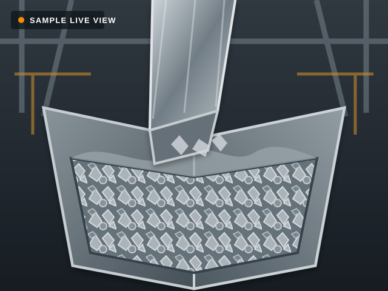

2026-09-0900:00 - 23:59정상
수거24:00:00
대표 적재율

[ ]| 시각 | 유형 | 내용 | 관련 녹화 |
|---|---|---|---|
| 2026-09-08 14:20 | 수거 | 수거 완료 | |
| 2026-09-07 09:10 | 알림 | 수거 필요 (적재율 82%) | |
| 2026-09-05 18:42 | 오류 | 센서 데이터 이상 | |
| 2026-09-03 11:25 | 알림 | 적재율 75% 도달 |
허용 범위는 서버 설정을 따릅니다.
| 이름 | 이메일 | 전화번호 | 수신 채널 | 상태 | 관리 |
|---|---|---|---|---|---|
| 관리자 A | admin-a@example.com | 010-****-0001 | 이메일, 문자 | 사용 | |
| 관리자 B | admin-b@example.com | 010-****-0002 | 문자 | 사용 | |
| 관리자 C | admin-c@example.com | - | 이메일 | 중지 |
선택한 이벤트가 발생하면 등록된 알림 대상으로 발송합니다.
발송 시점과 반복 및 복구 알림을 설정합니다.
측정 오류 또는 장비 장애가 정상으로 돌아오면 알림을 발송합니다.
최대 횟수에 도달하거나 이벤트가 해제되면 반복 발송을 종료합니다.
선택한 대상과 채널로 고정 테스트 메시지를 발송합니다.
관리 기능을 사용하려면 로그인하세요.